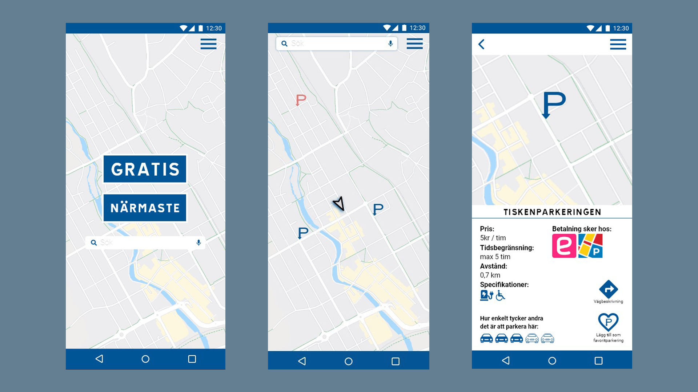

Prototyp parkeringsapp - Spot
Roll: ansvarig för arbetet i Adobe XD
Programvara: adobe XD
Slutprodukt: prototyp av en parkeringsapp
Översikt
För ett grupprojekt på Högskolan Dalarna skulle vi skapa en prototyp av en parkeringsapp. Målet med appen var att förenkla sökandet efter parkeringsmöjligheter. Genom att arbeta med bl.a. personas och scenarion visste vi vem som skulle använda appen och när den skulle tänkas komma till nytta. Med dessa insikter kunde vi skapa vår prototyp i Adobe XD och följa vår vision om en enkel och användarvänlig parkeringsapp.
